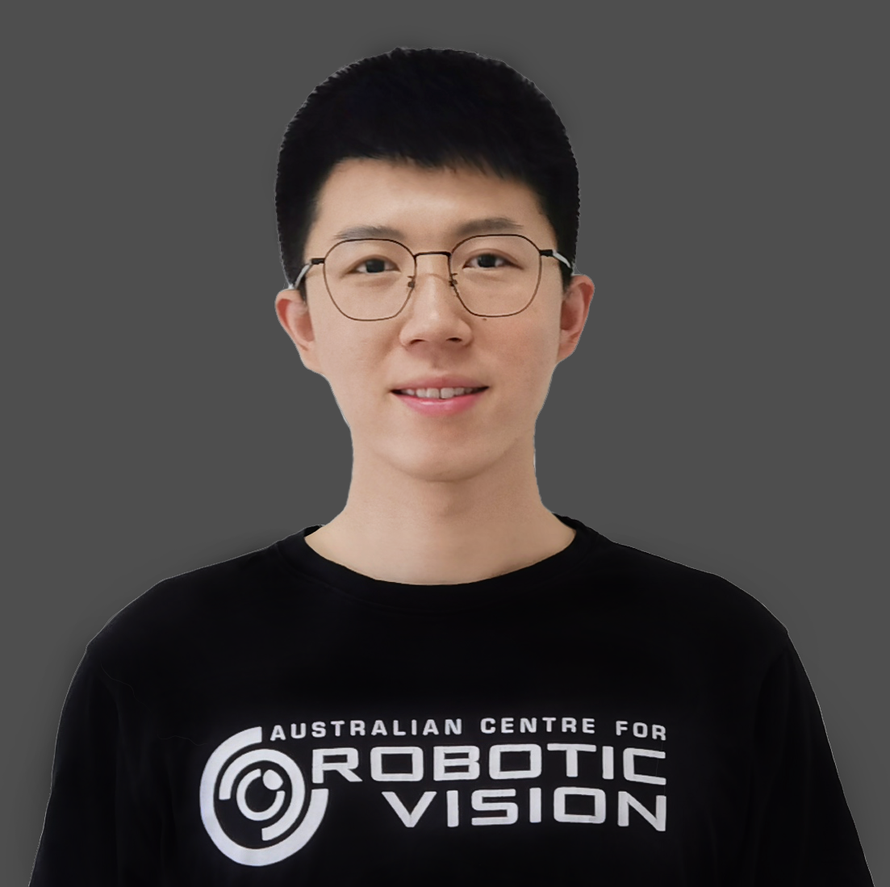

Associate Professor, Systems Engineering Institute, Academy of Military Sciences (AMS) 副研究员，军事科学院系统工程研究院
I am an Associate Professor at the Systems Engineering Institute, Academy of Military Sciences (AMS). I received my Ph.D. from the College of Engineering and Computer Science (CECS), Australian National University (ANU) and Data61/CSIRO in 2020. Before that, I received my B.Eng. in Electrical Engineering and Automation from Shanghai Jiao Tong University (SJTU) in 2014, and my M.Eng. from the National University of Defense Technology (NUDT) in 2016.
My research lies in computer vision and machine learning, and currently focuses on foundation models and AI agents. I have also worked extensively on zero-shot learning, few-shot learning and federated learning, as well as low-level vision tasks such as image and video deblurring.
我是军事科学院系统工程研究院副研究员。2020 年博士毕业于澳大利亚国立大学（ANU）工程与计算机科学学院及 Data61/CSIRO；此前于 2014 年获上海交通大学电气工程及其自动化专业工学学士学位，2016 年获国防科技大学工学硕士学位。
我的研究方向为计算机视觉与机器学习，当前主要聚焦于基础模型与智能体（AI Agent）。此外，在零样本学习、小样本学习、联邦学习，以及图像与视频去模糊等底层视觉任务方面开展了系统性研究工作。
@inproceedings{lv2025metacan,
title={MetaCAN: Improving Generalizability of Few-shot Anomaly Detection with Meta-learning},
author={Lv, Zhisheng and Zhang, Jianfeng and Jian, Songlei and Huang, Chenlin and Zhang, Hongguang and Pang, Guansong and Liu, Zhong},
booktitle={Proceedings of the ACM International Conference on Information and Knowledge Management (CIKM)},
year={2025}
}@inproceedings{liu2024llmembed,
title={LLMEmbed: Rethinking Lightweight LLM's Genuine Function in Text Classification},
author={Liu, Chun and Zhang, Hongguang and Zhao, Kainan and Ju, Xinghai and Yang, Lin},
booktitle={Proceedings of the 62nd Annual Meeting of the Association for Computational Linguistics (ACL)},
year={2024}
}@inproceedings{wang2024fake,
title={Fake News Detection via Multi-scale Semantic Alignment and Cross-modal Attention},
author={Wang, Jiandong and Zhang, Hongguang and Liu, Chun and Yang, Xiongjun},
booktitle={Proceedings of the 47th International ACM SIGIR Conference on Research and Development in Information Retrieval (SIGIR)},
year={2024}
}@inproceedings{deng2024exploiting,
title={Exploiting Inter-sample and Inter-feature Relations in Dataset Distillation},
author={Deng, Wenxiao and Li, Wenbin and Ding, Tianyu and Wang, Lei and Zhang, Hongguang and Huang, Kuihua and Huo, Jing and Gao, Yang},
booktitle={Proceedings of the IEEE/CVF Conference on Computer Vision and Pattern Recognition (CVPR)},
year={2024}
}@article{zhang2024saliency,
title={Saliency-guided Meta-Hallucinator for Few-shot Learning},
author={Zhang, Hongguang and Liu, Chun and Wang, Jiandong and Ma, Linru and Koniusz, Piotr and Torr, Philip H. S. and Yang, Lin},
journal={Science China Information Sciences},
year={2024},
doi={10.1007/s11432-023-4113-1}
}@article{zhang2022event,
title={Event-guided Multi-patch Network with Self-supervision for Non-uniform Motion Deblurring},
author={Zhang, Hongguang and Zhang, Limeng and Dai, Yuchao and Li, Hongdong and Koniusz, Piotr},
journal={International Journal of Computer Vision},
pages={1--18},
year={2022},
publisher={Springer}
}@InProceedings{Zhang_2022_ACCV,
author = {Zhang, Hongguang and Torr, Philip H. S. and Koniusz, Piotr},
title = {Improving Few-shot Learning by Spatially-aware Matching and CrossTransformer},
booktitle = {Proceedings of the Asian Conference on Computer Vision (ACCV)},
month = {December},
year = {2022},
pages = {1298-1315}
}@article{9681205,
author={Zhang, Hongguang and Li, Hongdong and Koniusz, Piotr},
journal={IEEE Transactions on Multimedia},
title={Multi-level Second-order Few-shot Learning},
year={2022},
pages={1-1},
doi={10.1109/TMM.2022.3142955}
}@article{zhang2020rethinking,
title={Rethinking Class Relations: Absolute-relative Supervised and Unsupervised Few-shot Learning},
author={Zhang, Hongguang and Koniusz, Piotr and Jian, Songlei and Li, Hongdong and Torr, Philip HS},
journal={arXiv preprint arXiv:2001.03919},
year={2020}
}@article{pan2020dual,
title={Dual Pixel Exploration: Simultaneous Depth Estimation and Image Restoration},
author={Pan, Liyuan and Chowdhury, Shah and Hartley, Richard and Liu, Miaomiao and Zhang, Hongguang and Li, Hongdong},
journal={arXiv preprint arXiv:2012.00301},
year={2020}
}@article{koniusz2020power,
title={Power normalizations in fine-grained image, few-shot image and graph classification},
author={Koniusz, Piotr and Zhang, Hongguang},
journal={arXiv preprint arXiv:2012.13975},
year={2020}
}@inproceedings{zhang2020few,
title={Few-shot action recognition with permutation-invariant attention},
author={Zhang, H and Zhang, L and Qi, X and Li, H and Torr, PHS and Koniusz, P},
booktitle={Proceedings of the European Conference on Computer Vision (ECCV 2020)},
volume={12350},
year={2020},
organization={Springer}
}@article{zhao2020one,
title={One-shot video-based person re-identification with variance subsampling algorithm},
author={Zhao, Jing and Yang, Wenjing and Yang, Mingliang and Huang, Wanrong and Yang, Qiong and Zhang, Hongguang},
journal={Computer Animation and Virtual Worlds},
volume={31},
number={4-5},
pages={e1964},
year={2020},
publisher={Wiley Online Library}
}@article{zhang2019deep,
title={Deep Stacked Hierarchical Multi-patch Network for Image Deblurring},
author={Zhang, Hongguang and Dai, Yuchao and Li, Hongdong and Koniusz, Piotr},
journal={arXiv preprint arXiv:1904.03468},
year={2019}
}@article{zhang2019few,
title={Few-shot Learning via Saliency-guided Hallucination of Samples},
author={Zhang, Hongguang and Zhang, Jing and Koniusz, Piotr},
journal={arXiv preprint arXiv:1904.03472},
year={2019}
}@inproceedings{zhang2019power,
title={Power normalizing second-order similarity network for few-shot learning},
author={Zhang, Hongguang and Koniusz, Piotr},
booktitle={2019 IEEE Winter Conference on Applications of Computer Vision (WACV)},
pages={1185--1193},
year={2019},
organization={IEEE}
}@inproceedings{zhang2018model,
title={Model selection for generalized zero-shot learning},
author={Zhang, Hongguang and Koniusz, Piotr},
booktitle={European Conference on Computer Vision},
pages={198--204},
year={2018},
organization={Springer}
}@InProceedings{Koniusz_2018_ECCV,
author = {Koniusz, Piotr and Tas, Yusuf and Zhang, Hongguang and Harandi, Mehrtash and Porikli, Fatih and Zhang, Rui},
title = {Museum Exhibit Identification Challenge for the Supervised Domain Adaptation and Beyond},
booktitle = {The European Conference on Computer Vision (ECCV)},
month = {September},
year = {2018}
}@InProceedings{Zhang_2018_CVPR,
author = {Zhang, Hongguang and Koniusz, Piotr},
title = {Zero-Shot Kernel Learning},
booktitle = {The IEEE Conference on Computer Vision and Pattern Recognition (CVPR)},
month = {June},
year = {2018}
}@InProceedings{Koniusz_2018_CVPR,
author = {Koniusz, Piotr and Zhang, Hongguang and Porikli, Fatih},
title = {A Deeper Look at Power Normalizations},
booktitle = {The IEEE Conference on Computer Vision and Pattern Recognition (CVPR)},
month = {June},
year = {2018}
}
Other Activities and Awards其他经历与奖励